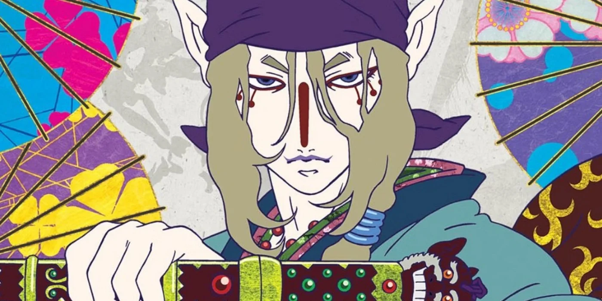
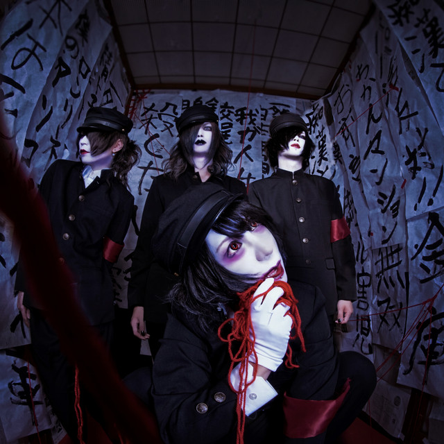
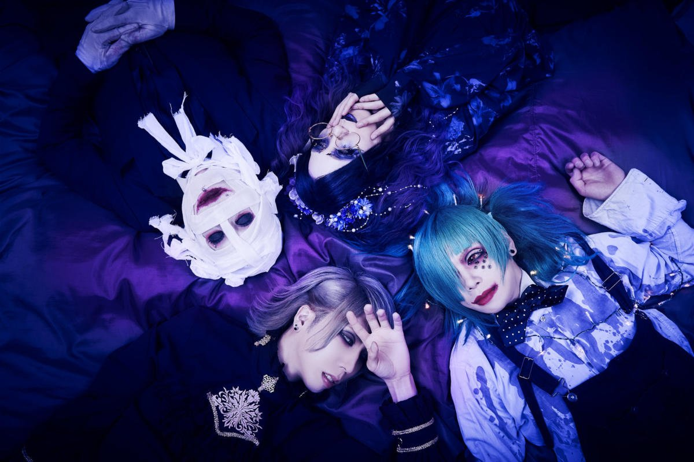

NieR: Automata is a JRPG that was released in the year 2017 developed by Platinum Games, created by Yoko Taro and published by Square Enix. This game is a spinoff part of a long running series originally titled Drakengard and a sequel to NieR: Replicant. The story follows 2 androids named 9S and 2B and their fight against the Machines in order to protect the “Council of Humanity” during the 14th Machine War. As you progress through the game you realise that this game has multiple endings starting from A-Z with maybe a bonus one from a DLC, many of them are joke endings with only 5 leading to the ending of the storyline of 2B and 9S(endings A, B, C, D and E), throughout the playthroughs the perspective begins to change as it switches from first 2B to 9S and 9S to A2, eventually allowing the perspectives to switch more and more frequently leading to the games final climax. As you play through the first and second ending and its missions you see 2B and 9S discover machines trying to understand human concepts and imitating their behaviour like religions, wearing clothes and creating hierarchies. Through working with the resistance you come to meet Pascal and the group of machines that have separated themselves from the machine network and you begin working alongside them as the story unfolds and the true antagonists are presented. As well as the game, NieR: Automata recently got an anime adpatation that came out earlier this year, the anime is finished but during it's production several hiatus' ended up delaying the anime from finishing until after July.

Mononoke is a 2007 anime series that originated from 2006s Japanese horror anthology named Ayakashi: Samurai Horror Tales featuring a 3 episode story arc called Bakeneko or Goblin Cat. The main character of this series is never named but it is called the Kusuriuri or Medicine Vendor with the various arcs of the story following him wandering, encountering and destroying Mononoke. Mononoke being a type of Ayakashi which are spirits that linger in the human world, binding themselves to the negative human emotions. The medicine vendor uses his knowledge and the testimonies of the people around him in order to determine the Mononoke's Shape(Kachi), Truth(Makoto) and Reason(Kotowari) which is used to unlock his sword to exorcise the spirit. The story arcs range from 2-3 episodes starting from the anthologies Bakeneko arc and ending with a newer arc with another Bakeneko. A very large and distinct part of the series would be its avant garde animation and general style, using an almost Ukiyo-e style the anime blends both 3D environments with 2D animation with a paper texture to create very vibrant scenes. Around the series 15th anniversary, a new addition to the series was announced with a teaser for a new movie. Initially it was set to come out in 2023 but due to some problems with the original Japanese VA, it got delayed to release in summer 2024.
 
This genre of music originated in the 1980s as a fashion and music scene movement. The style is inspired by glam rock and other 80s rock music and defined by the visuals and performance using elaborate use of outfits, hair and an endogenous aesthetic. The genre started in Japan's underground music scene and throughout the years fought declines and ended up becoming largely popular after going through several transitions. Visual Kei doesn’t really follow any specific music genre and can range from punk rock, heavy metal and electronica and is instead identified by its visual components like costumes, make-up and hair. As of now my personal favourite groups are Gulu Gulu, Kaneto Juusei, Dadaroma, Amai Bouryoku and Kebyo. While I may not understand the lyrics fully due to lack of translations, the sounds and style of each group are very enjoyable in my opinion and each of them have a uniqueness to them.